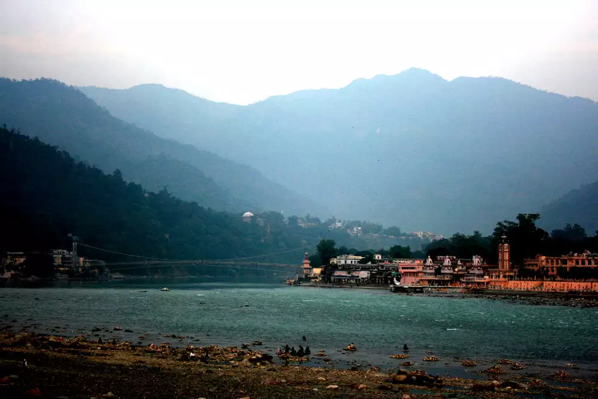
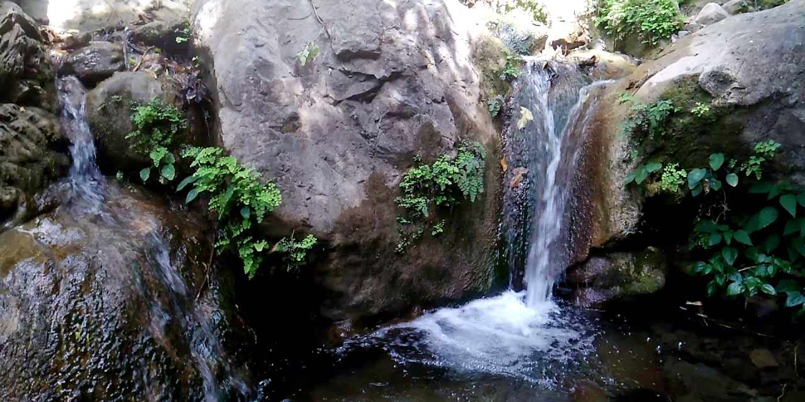

Bridge
Lakshman Jhula
7 km from City Center
A famous hanging bridge across the river Ganga connecting Tapovan and Jonk.

Ghat
Triveni Ghat
4 km from City Center
Confluence of three holy rivers - Ganga, Yamuna and Saraswati. Famous for evening Ganga Aarti.

Ritual
Ganga Aarti
4 km from City Center
Auspicious ritual performed on the ghats in the evening. Most popular at Parmath Niketan.

Sacred Temple
Trimbakeshwar Temple
0 km from City Center
Thirteen storey temple situated on the banks of river Ganges, opposite Lakshman Jhula.

Waterfalls
Himshail Waterfalls
4 km from Lakshman Jhula
Calm and serene place popular for yoga and meditation. Tat Baba Cave is nearby.